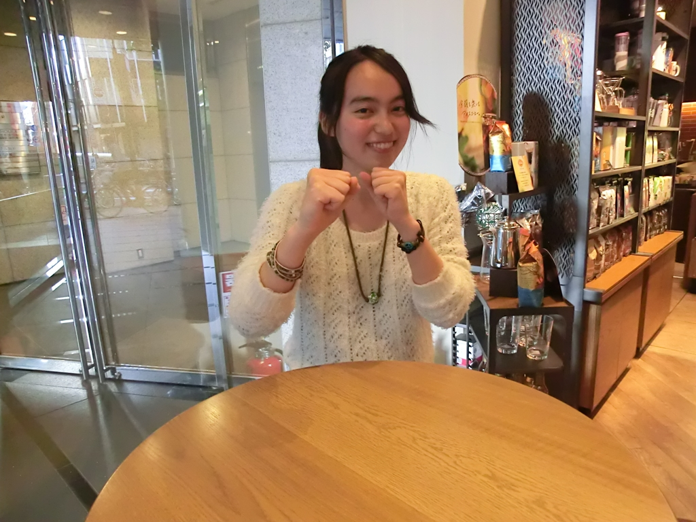
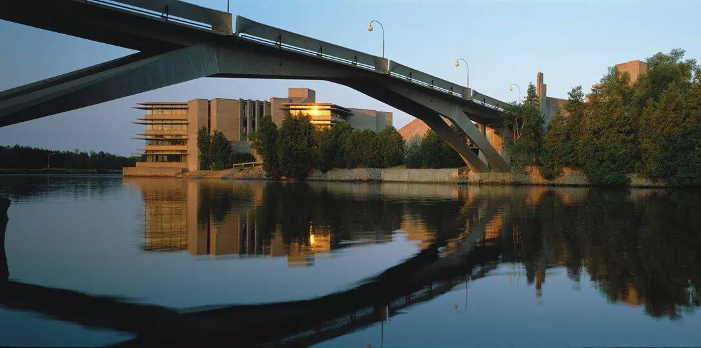

総合学術サークルCloud.A 参加者インタビュー
それは周囲ではなく自分がやりたいことなのか
| 所属 | Trent University (Canada) |
|---|---|
| 専攻 | International Development / Media Studies |
国際開発学（International Development Studies）は貧困や格差、身分や差別などについての学問です。初めUNICEFに興味があったので、その専攻を選びました。ただ、今の興味としては、それよりも社会や教育がどうあるべきかに興味があるので、メディア研究（Media Studies）も併せて専攻しようとしています。
---メディア研究には、どうして興味を持ったのですか。
マスコミやSNSといったメディアの同調圧力に関心があったためです。メディアが画一的な価値観を流布するような影響力を持っていると感じたことがあるので、それをうまく使う方法などについて考えたいと思いました。
---例えばどんな時に同調圧力を感じますか。
例えば友人が「大学に行くからオシャレしなきゃ」と言っているのを聞いた時に感じました。私はそういったことをあまり気にしないタイプですが、自分がやりたいことではなく、周りの視線を気にして自分の行動を決めているのがつまらないなあと思いました。
---<その原因がメディアや教育にあると思ったんですね。/p>
そうです。例えば「美しさ」の定義を考えた時に、目が大きいとか肌が白いとか、外国人のような顔立ちが「美しい」と思われていますが、それはメディアが決めつけたもので、まるで価値観を強制されているように感じます。そういう状態に「生きづらさ」を感じて、そうではない生き方もアリではないかなと。個人個人が自分を主語にして生き方を決められる方が望ましいと思います。
---なるほど、そういう理由でメディア研究に興味を持ったんですね。
まず、今は高校を卒業して、9月にカナダのトレント大学へ入学予定です。高校2年生の3月ころまでは普通に日本の大学に進学しようと思っていましたが、これから日本にずっといるべき理由も無いし、他の国へ行ってみたいと思ったことで、留学することに決めました。
---決めてから準備などは何がありましたか。
まず行先を決めます。最初、ベネッセの海外進学センターに行って相談したところ、カナダ、イギリス、オーストラリア、アメリカが主流ですと言われました。そこで母がカナダ好きなので説得しやすいと思い、カナダに決めました。その中から大学を決めるのですが、カナダ大使館の留学フェアでそこでトレント大学に出会いました。細かい情報等を聞く中で、クラスが小さく、教授と密にコミュニケーションを取れそうなところに惹かれて決めました。
---なるほど、色んな情報の集め方があるんですね。
まずは山に登りたいです。あと日本の美味しいものをひたすら食べたい（笑）。
---なるほど。
あと、友達を300人くらい作りたいです。先日、Cloud.Aの勉強会に行ったところ、20人くらいは知り合いが増えたので、そういったイベントに週に1回くらいずつ顔を出せば、300人くらいは余裕かなと（笑）。
---アクティブですね！
職業はありません。ただ、色んな場所に行き、色んな暮らしを体験して、色んな美味しいものを食べることが目標です。
---食べ物が重要なんですね（笑）では、今まで海外で食べたもので最も美味しかったものを教えてください。
え、あんまり海外に行ったことないです（笑）。修学旅行でシンガポールとマレーシアに行ったのと、韓国に5日間ほど旅行したくらいです。まあキムチが美味しかったかな、くらいです。
---無いんですか（笑）。よく留学に踏み切りましたねー。
なぜニュースでネガティブなことばかり報道するのか、が気になることの1つです。それから、どうやったら障碍を持つ方が、意識的にも、社会の仕組み的にも、もっと包摂的に生きることができるのかも研究してみたいです。例えば、町で障碍者の方が普通に働いている姿を見ることは稀ですし、メディアに出演する方も少ないと思います。そういった現状を何とかする方法について考えたいです。
---ありがとうございました！